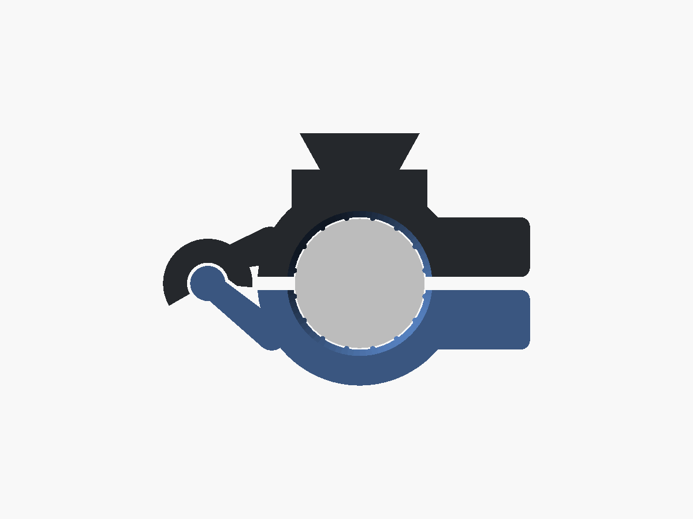
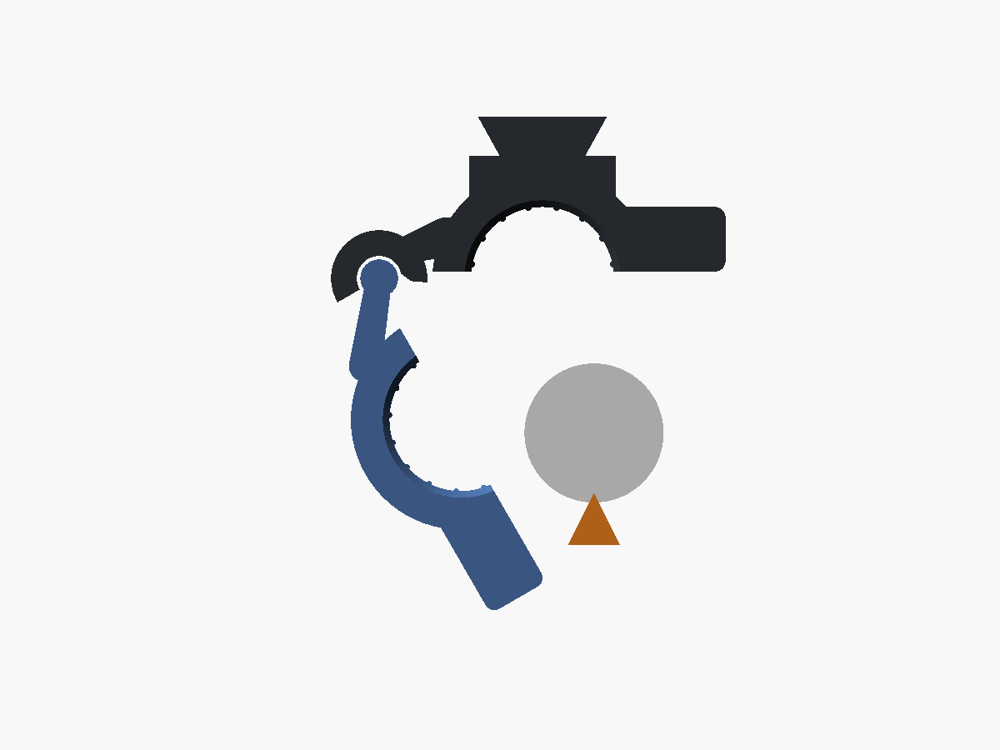
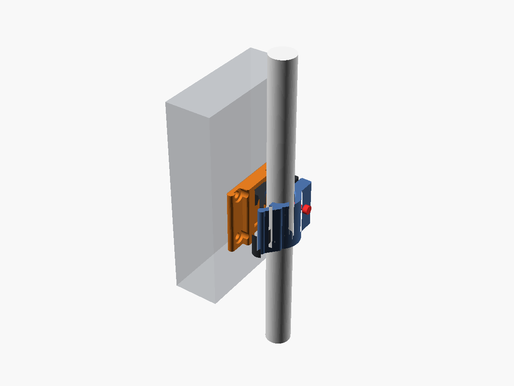
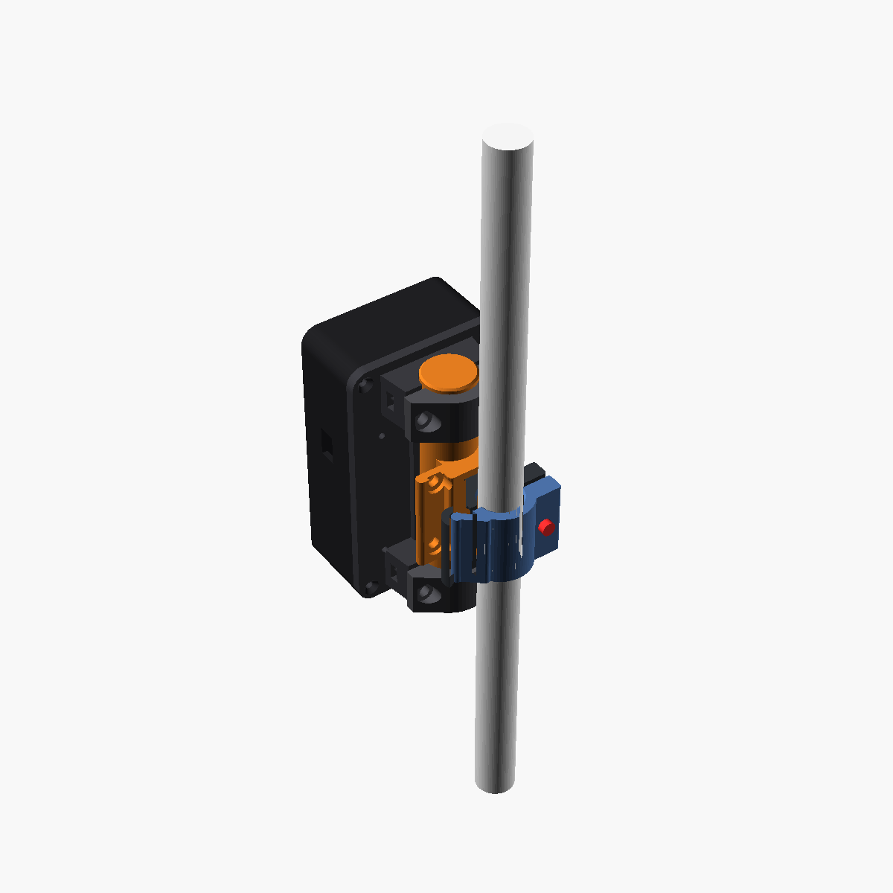
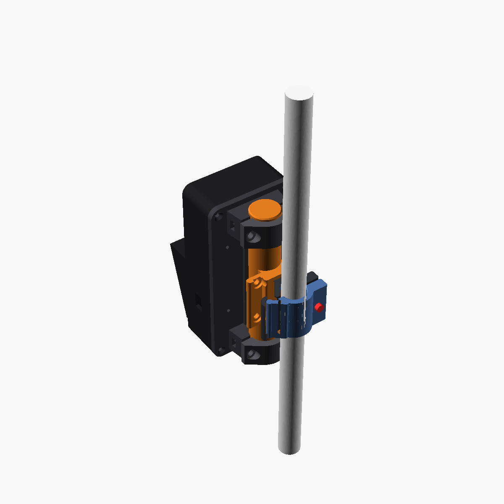
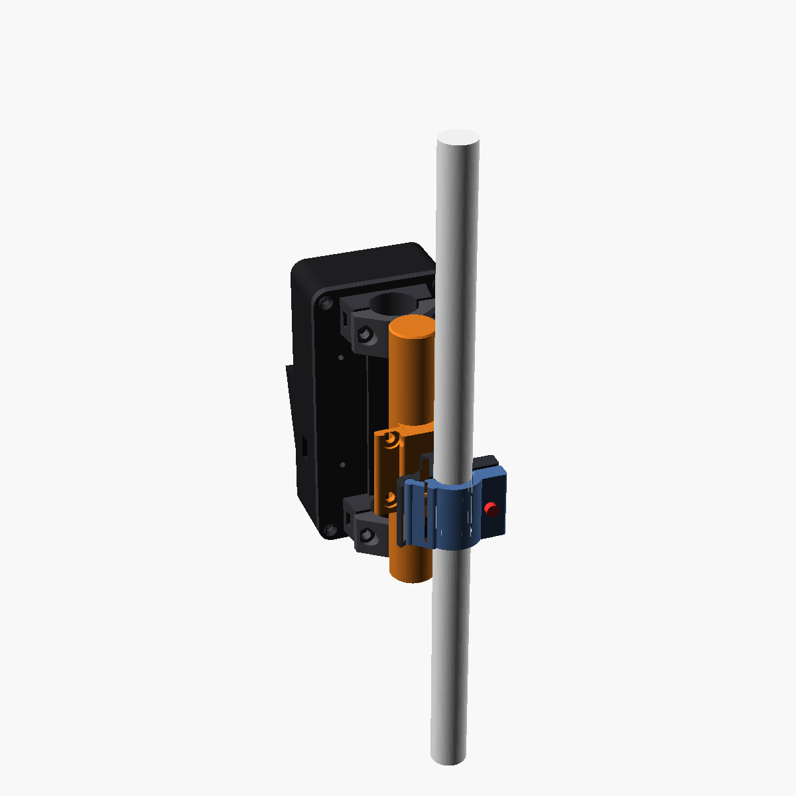
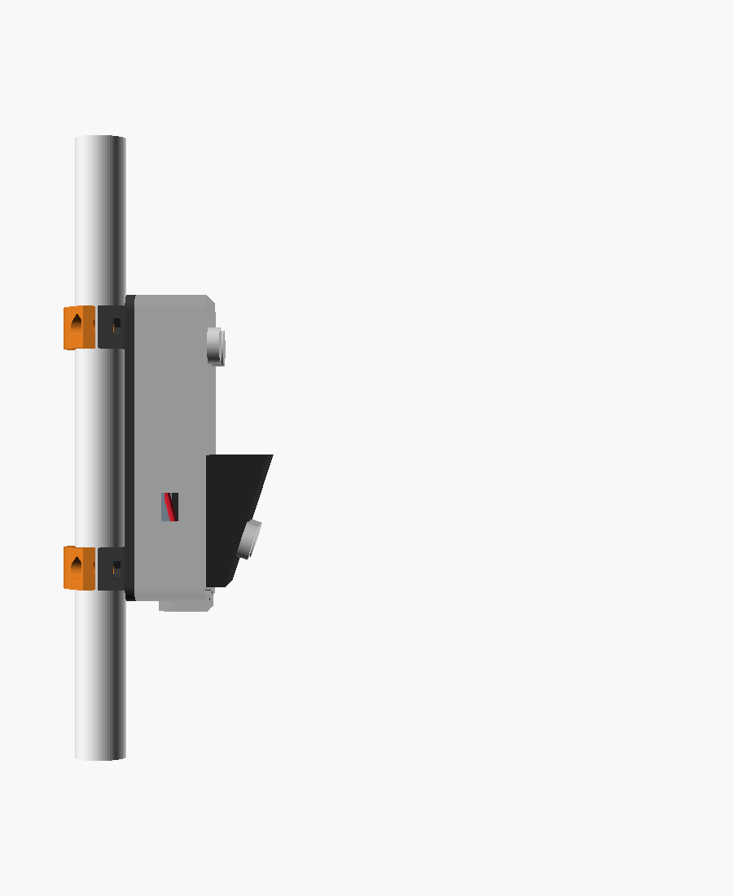
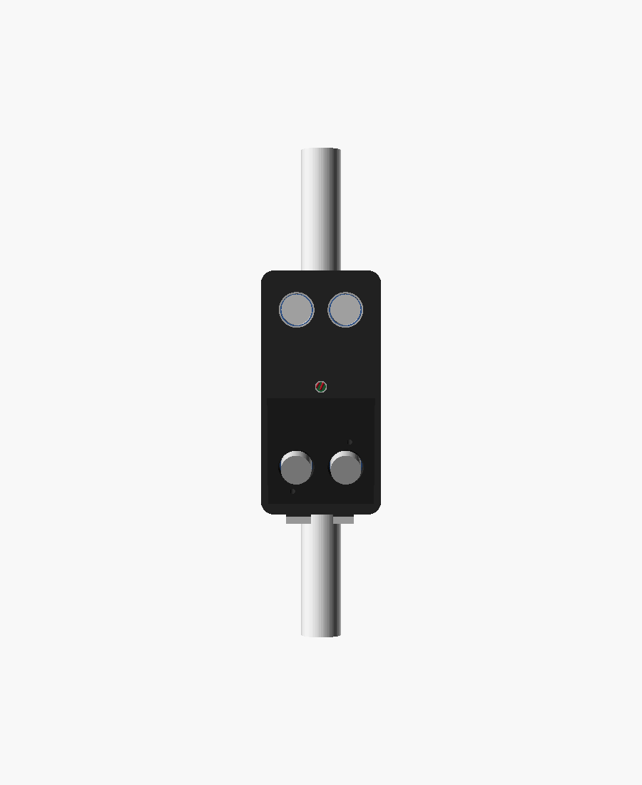
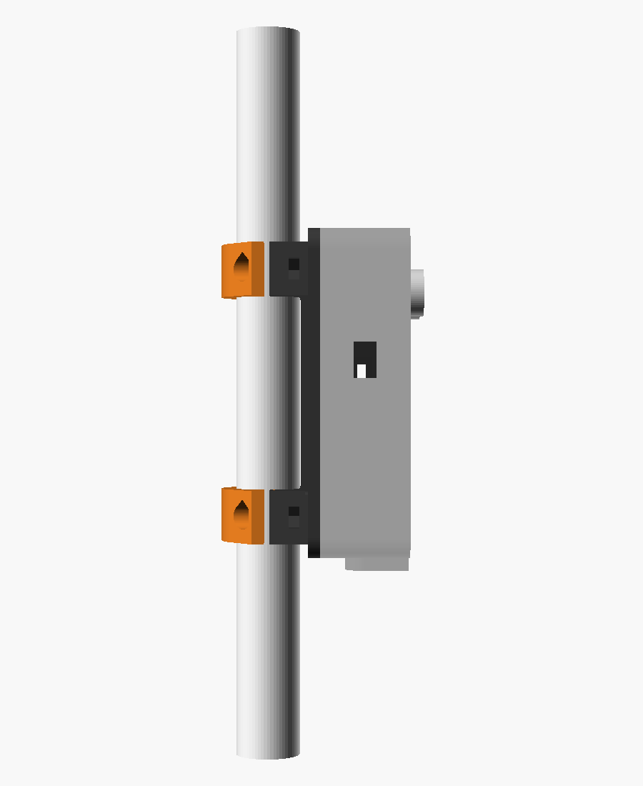
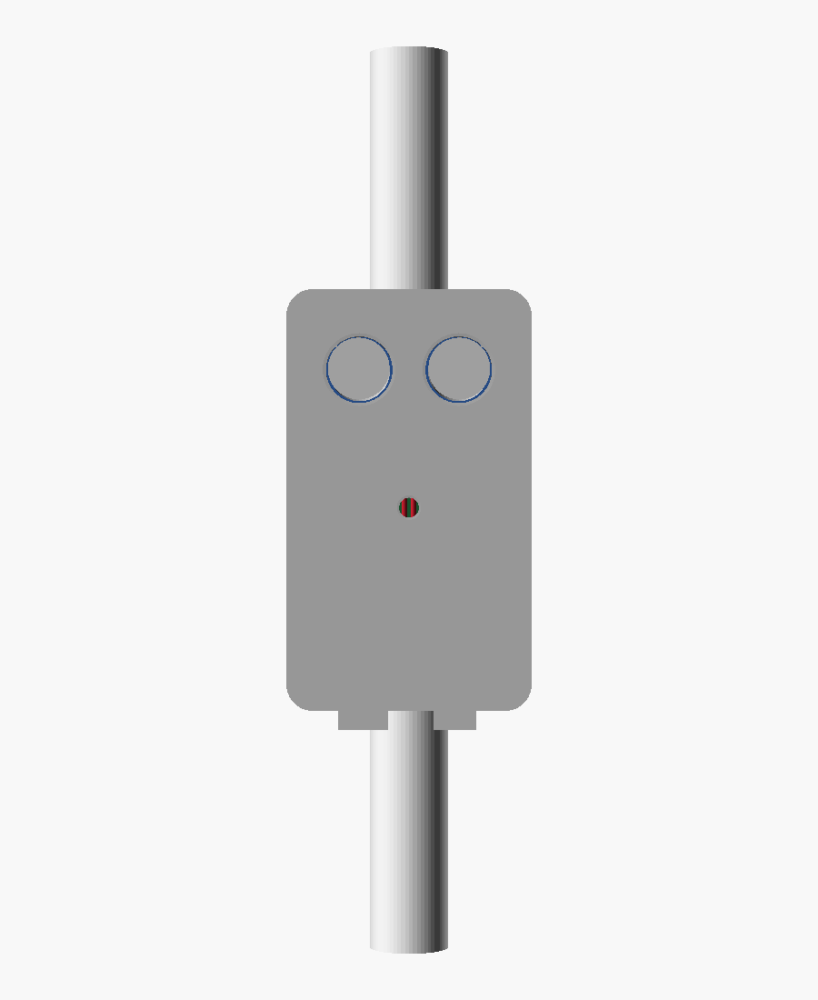

All ACCESS physical designs are on this one page. The CAD source and every file are also in GitHub DESIGNS.
| Design | Status |
|---|---|
| V1 wrap-around cane clamp: one screw, fits the thin stick, works with the present device | FIT TEST PASSED 5 Nov: grips the stick |
| Device 2 + Device 3 adapters: fit the existing boxes onto the wrap clamp | ADAPTER READY · needs physical check · not printed |
| Enclosure 151: four-eye (A) and two-eye (B) | Preview from 3 Nov |
| Designer casing (WhatsApp 3mf, 4 Nov 23:59) | ON HOLD: Founder said do not print (stopped 5 Nov 09:22 while preheating) |
| Full V1 catcher drafts (cradle + bridge) | Archived option |
The problem. The printed catcher's clamp was far too big for the thin white cane: it needed a packing shim and was still loose. The earlier fix was a closed ring, and that could only slide on over the end of the stick. Founder: "you can only close it in".
The fix: it closes around the stick from the side. There are two halves. A hook on the dark half rides on a round bar on the blue half, so there is no loose hinge pin. Open the jaw, put it around the stick at any height, close it, and tighten ONE M3 × 16 screw. The nut is captured in the plastic and the screw never touches the cane. The same orange shoe bolts to the existing catcher (2 × M4), so the present device is reused. The box slides off and the clamp stays on.



| Step | Files | X1C |
|---|---|---|
| 1. Fit test: short 14 mm clamps at 16.2 and 16.6 | 3mf · 16.2 STL · 16.6 STL | ≈52 min · 20 g |
| 2. Full 30 mm clamp at the chosen size + shoe | 3mf (16.2) · 16.2 · 16.6 · shoe | ≈1 h 18 min · 31 g |
PLA or PETG, 0.20 mm layers, 6 walls, 40% infill, no supports, halves printed upright. Hardware: 1 × M3 × 16 + M3 nut (clamp), 2 × M4 (shoe to catcher). Editable source: v1_clamp_wrap.scad (OpenSCAD, set CANE_OD_MM).
The wrap clamp test PASSED (Founder, 5 Nov): it sizes and grips the stick. Now the existing boxes have to go onto it, with no changes to the boxes.
How. Devices 2 and 3 are the enclosure-151 prints further down this page: Device 2 = two-eye (110 mm, one sensor) and Device 3 = four-eye (130 mm, two sensors). Each box holds the cane with two split collars on its back plate. Their bore is 22 mm (a placeholder), which is why they are far too big for the 16 mm stick.
The adapter is a 22 mm "dummy cane" post with the shoe built on. The box's own two collars clamp the post, with their existing M4 screws, exactly as they were made to clamp a cane. The shoe slides down onto the rail of the wrap clamp on the real stick and clicks in. The chain is: stick → wrap clamp (ONE M3) → rail → shoe + post → the box's own collars → box.



| Device | Status | Files | X1C |
|---|---|---|---|
| Device 2 (two-eye, 110) | ADAPTER READY · REQUIRES PHYSICAL CHECK | 3mf · STL | ≈69 min · 41 g |
| Device 3 (four-eye, 130) | ADAPTER READY · REQUIRES PHYSICAL CHECK | 3mf · STL | ≈77 min · 47 g |
| Wrap clamp, full 30 mm (one per device) | Test size passed | 3mf (16.2) · 16.2 · 16.6 | ≈40 min each |
Notes. Clearances come from the enclosure-151 design numbers: post-to-collar 0.2 mm all round, post-to-plate 0.7 mm, shoe clear of the collar caps by 6 mm or more along the cane, stick-to-box 8 mm or more. The box now sits about 3 cm further from the stick than before. Post Ø21.6: if a collar can't close tight on it, a layer of tape fixes it. If Tope changed the collars (bore not 22, or no collars), a quick back photo is the one thing needed. Hardware: 1 × M3 × 16 + nut per clamp; the 4 existing M4 per box. Nothing is printed without the Founder's GO.
Two designs on the same 64 mm wide, 30 mm deep box. A carries two HC-SR04 boards: upper pair straight ahead, lower pair in a nose angled 18° down. B carries one HC-SR04 facing forward and is 20 mm shorter. Both have a centre indicator LED, a power slide switch, a micro-USB charge opening and two bottom cable outlets. Both hold Tope's controller board, battery and wiring on a removable tray, and clamp to the cane with two screw collars. Nothing has been sliced or printed.
Hardware shown is the nominal size. Wires are drawn to show routing; real wires will be loose.
Rendered from the CAD. Box shown see-through so the sensors, controller, battery and wiring are visible.




| Item | A · 4 eyes | B · 2 eyes | Basis |
|---|---|---|---|
| Box outside (W × H × D) | 64 × 130 × 30 | 64 × 110 × 30 | 146 approved envelope; B shortened |
| Inside cavity | 59.2 × 125.2 × 27.6 | 59.2 × 105.2 × 27.6 | 2.4 mm walls (6 lines) |
| Sensor openings | 4 × Ø17.4 | 2 × Ø17.4 | 16 mm can + 0.7 mm per side confirm on gauge |
| Eye centre pitch (side by side) | 26.0 | 26.0 | HC-SR04 nominal measure |
| Upper eye height (from box top) | 21.0 | 21.0 | clears corner screw bosses |
| Lower eyes | axis 18° down, centre 26 mm above box bottom | none | Founder 18° |
| Upper to lower eye spacing | 83 mm (vertical) | n/a | keeps the two beams apart |
| Nose (lower sensor housing) | 56 wide · sticks out 8 to 26.2 | none | 4 × M3 from inside the box |
| Can protrusion past the face | 5.1 | 5.1 | board 4.5 mm behind the wall |
| Sensor board seat | 4 rest ribs + 2 screw tabs per board, M3 × 8 self-tapping | no screws through the HC-SR04 | |
| Controller cradle | 31 × 56 inside, 3 mm pads, 4 tie-slot pairs, 10 mm parts height | Tope's vero ~30 × 55 measure | |
| Battery space | 51 × 35 cradle on tray, strap channel | 51 × 35 pocket on front wall | 503450 LiPo placeholder identify |
| Clearance: sensor plugs to controller parts | 3.4 | 3.4 | CAD clash check: no overlap |
| Cane clamp | 2 split collars 18 wide, bore Ø22, 2 × M4 + captured nut each; cane axis 18 mm behind box | bore is a placeholder measure cane | |
| Total depth, front to cane back | 90 (nose top) | 69 (can tips) | includes clamp caps |
| Indicator LED | Ø5.2, centre, 68 up | Ø5.2, centre, 53 up | 5 mm LED on an inner sleeve, dome ~1 mm proud |
| Power switch | right wall, 66 up | right wall, 62 up | slide-switch slot 6.5 × 3.2 + body pocket 9 × 4 confirm switch |
| Charge port | left wall, 40 up | left wall, 66 up | micro-USB (Android) plug opening 12 × 7.5 |
| Cable outlets | Ø8 + Ø6 in the bottom, with strain-relief collars | vibration motor / handle | |
| Item | 146 (printed on the Anet) | Now | Why |
|---|---|---|---|
| Openings | 2 × Ø17.0, one each | A: 4 × Ø17.4 · B: 2 × Ø17.4 | Two full HC-SR04 boards, two eyes each (Founder) |
| Eye arrangement | one column (COL) | side by side, 26 apart | HC-SR04 pins then point down, so the plugs fit inside without bending |
| Box | 64 × 130 × 30 | A same · B 64 × 110 × 30 | B is the shorter two-eye test |
| Nose | 18°, 50 wide | 18°, 56 wide (A only) | a 45.6 mm board now fits across it |
| Electronics | two loose trays 50 × 65 and 50 × 38 | one tray: battery + controller cradles, tie slots, pads | one part to fit Tope's boards to, screws to the back plate |
| Ports | 7 mm round switch hole, USB-C slots | centre LED, slide switch slot, micro-USB charge, 2 cable outlets | Founder 3 Nov |
| Clamp spine | touched the cane by 1 mm | 0.5 mm gap | clash found in the CAD check |
| Printer | Anet A8 Plus, SD card | Bambu X1 Carbon, one plate | new printer |
The front wall and ribs around the upper eyes, plus the nose for A, with the screw tabs. You press the real HC-SR04 boards in and check the eyes line up before printing the whole box.
All parts on one 256 × 256 X1 Carbon plate with no overlaps: box, back plate with collars, 2 caps, tray, tabs, and the nose for A.
Each number is one parameter in the CAD. A change regenerates both designs.
Bambu Studio is not installed on this Windows PC. I found no install, no app data and no Start menu entry, so I have not connected to the printer. Nothing has been sent to it.
Once Bambu Studio is installed and signed in to your Bambu account, I can confirm the printer is online and slice with the real X1C profile.
D:/ZAP-ENGINEERING/opus-enclosure-151-20261103/enclosure_151.scad
One file; V="four" or V="two". Original COL, A2 and 146 files are kept read-only in originals-READONLY with SHA-256 sums.